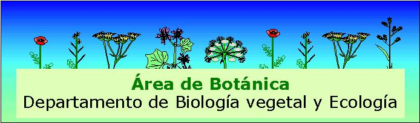

Profesor Carlos Romero Zarco
Guiones de prácticas de asignaturas de Botánica
Herbarios
Guía para la elaboración de un herbario de carácter local
Novedades y actualizaciones:
©
Carlos Romero Zarco - 26 de octubre de 2026